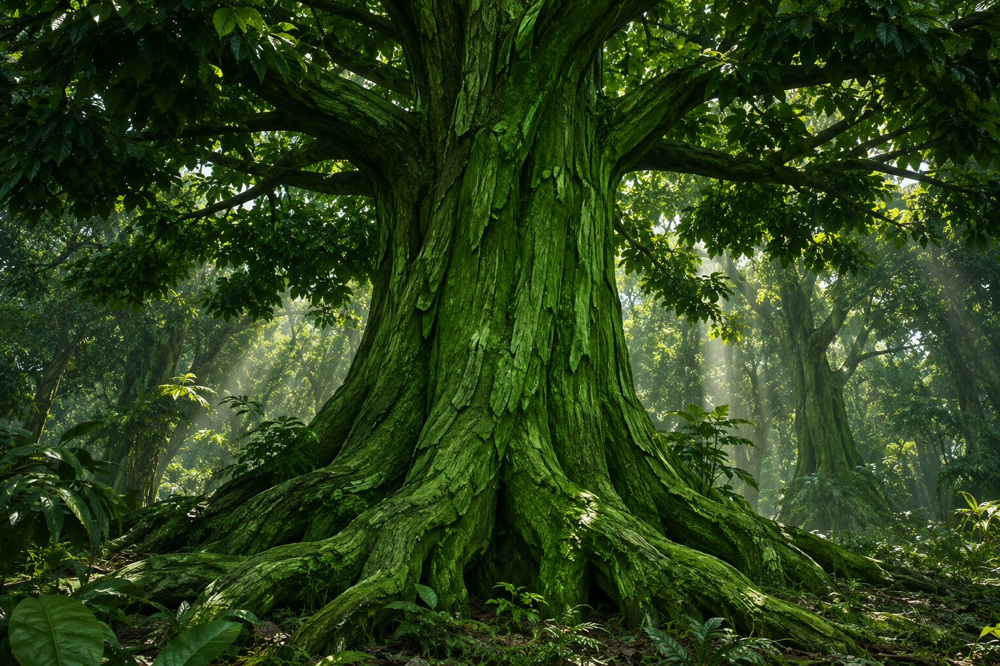
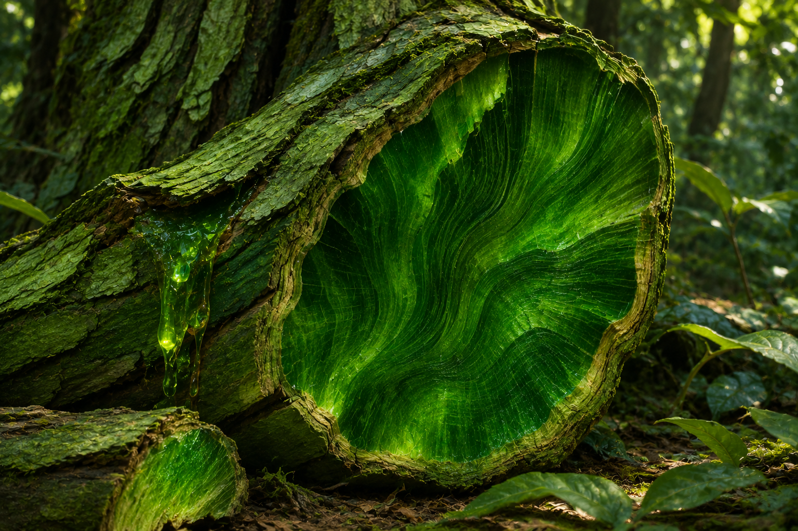
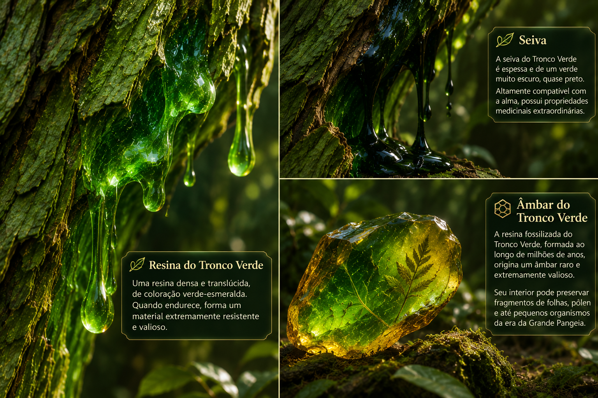
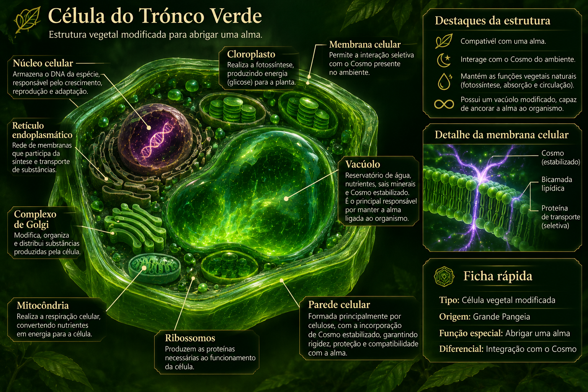

A origem dos Troncos Verdes

Durante o período da Grande Pangeia, a Célula Primordial desenvolveu diversas formas de vida. Entre elas, surgiu uma espécie vegetal que representaria um dos maiores avanços da evolução daquele período: os Troncos Verdes.
Seu objetivo não era apenas criar uma planta mais resistente, mas também uma forma de vida capaz de abrigar uma alma, permitindo que a consciência pudesse se manter ativa e acumular experiências por mais tempo.
A alma passou a ter experiências que a natureza vegetal era capaz de oferecer, como crescer, se curar, resistir a impactos e doenças, além de se reproduzir, garantindo a perpetuação da espécie.
A resistência dessa árvore foi capaz de manter a alma consciente por mais tempo do que as tentativas anteriores, permitindo uma evolução mais avançada da consciência. Isso possibilitou que a alma chegasse ao ponto de reconhecer o que desejava.
As experiências que a árvore fornecia já não eram mais suficientes. Por isso, a alma passou a buscar novas formas de vida, capazes de se movimentar e interagir com o ambiente. Assim, começou a existência dos animais.
Características dos Troncos Verdes

O Tronco Verde tem a aparência de uma árvore de grande porte, completamente verde. Suas folhas possuem um verde forte e muito escuro, enquanto seu tronco e suas raízes apresentam uma tonalidade mais clara.
Em seu interior, a medula, o cerne e o alburno também são verdes, porém apresentam uma tonalidade mais brilhante e viva, semelhante à de uma esmeralda.
Tudo o que sai dessa árvore apresenta essa coloração. Sua seiva possui um verde mais escuro, quase preto, enquanto sua resina se assemelha ainda mais à pedra preciosa esmeralda.

Quando encontrada fossilizada em seu estado de âmbar, essa resina pode valer mais do que a própria joia. Sua aparência particular resulta de sua estrutura celular modificada.
Estrutura da célula

Parede celular
A parede celular continuava sendo formada principalmente por celulose, responsável pela rigidez e sustentação. Entretanto, sua estrutura também incorporava Cosmo estabilizado, tornando o organismo compatível com a presença de uma alma.
Membrana celular
A membrana celular foi modificada para permitir que cada célula interagisse com o Cosmo presente no ambiente. Seu funcionamento seguia um princípio semelhante ao utilizado pela Célula Primordial durante a formação dos primeiros organismos.
Núcleo celular
O núcleo continuava exercendo sua função habitual. Seu DNA armazenava as informações genéticas responsáveis pela formação, crescimento, reprodução e adaptação da espécie.
Vacúolo
O vacúolo continuava armazenando água, nutrientes e sais minerais. Porém, sua estrutura interna foi profundamente modificada.
Sua parede passou a possuir uma matriz formada por Cosmo estabilizado, funcionando como um reservatório biológico capaz de manter uma alma ligada ao organismo.
Produção de energia e circulação
Cloroplastos e fotossíntese
Os cloroplastos mantinham o funcionamento encontrado nas plantas comuns. A fotossíntese continuava sendo uma das principais fontes de energia do organismo.
O Tronco Verde utilizava luz solar, água e dióxido de carbono para produzir glicose e oxigênio.
Absorção de água
A água era absorvida normalmente pelas raízes e transportada pelo xilema para as diferentes regiões da planta.
Floema
O floema continuava distribuindo os nutrientes produzidos pela fotossíntese. Entretanto, também passou a transportar o Cosmo absorvido pelo organismo.
Esse Cosmo circulava por toda a planta juntamente com a seiva, mantendo a estabilidade entre corpo e alma.
Seiva
O Tronco Verde possuía seiva bruta e seiva elaborada, assim como as árvores comuns. A diferença estava na composição: ambas carregavam partículas de Cosmo estabilizado.
Por essa razão, sua seiva tornou-se altamente compatível com a alma e adquiriu propriedades medicinais extraordinárias, capazes de auxiliar na estabilização e recuperação de estruturas espirituais.
Crescimento e regeneração
Os meristemas continuavam responsáveis pela produção constante de novas células, permitindo o crescimento contínuo do Tronco Verde.
Durante milhões de anos, as almas que permaneceram ligadas a esses organismos conviveram com o processo natural de renovação celular.
Essa convivência permitiu que compreendessem, através da experiência, os princípios biológicos da regeneração.
Importância para a evolução
O Tronco Verde Primordial não foi apenas um organismo vegetal importante para a Grande Pangeia. Ele também representou uma etapa fundamental na evolução das almas.
Através da convivência com esse organismo, as almas aprenderam como a natureza cresce, se renova, se adapta e mantém sua estabilidade.
Mais tarde, esse conhecimento evolutivo se tornou uma das bases para o desenvolvimento da magia voltada ao controle da vida, da natureza e dos processos biológicos.
Toda a biodiversidade inteligente do Mundo Nato descende, direta ou indiretamente, dessa espécie. Entre seus descendentes estão Elfos, Fadas, Anões, Ogros, Goblins, Duendes e outras espécies.